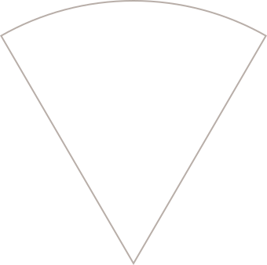
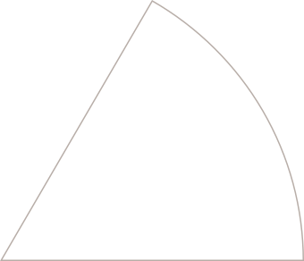
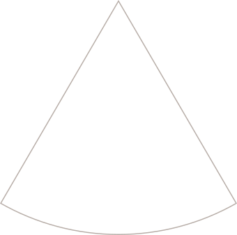
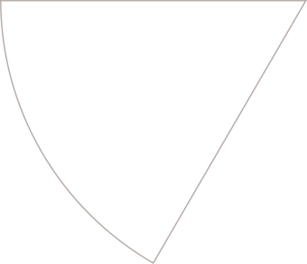
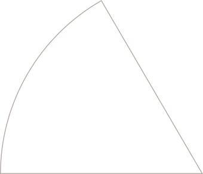
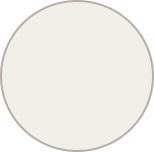

UNDERSTAND
I find what slows the work down and what could be clearer.
02 / WHAT I DO
I like making things clearer, easier to use, and easier to keep improving.
I find what slows the work down and what could be clearer.
I turn ideas into useful tools that help with the work.
I simplify the steps so the work takes less time and effort.
03 / EXPERIENCES
I started using AI for journaling and sorting through everyday thoughts. While using it, I kept noticing little things I wished it could do better, so I started experimenting for fun.
I brought those experiments into real projects, using AI to organize information, support daily work, and turn rough ideas into useful results.
After work, I focused on recovery, continued studying, and kept building at a pace I could sustain.
I started making small tools, websites, and systems around problems I understood firsthand.
I am looking for a role or project where I can keep learning, contribute useful work, and grow with a team.
04 / TOOLS I USE
WORK WITH AI
I use several AI tools through VS Code and command-line apps. I connect their work by hand with my own Ryos system, so each one can help where it works best.






MY TOOLS05 / PROJECTS
Personal systems, client work, and small tools I built to solve real problems and make everyday work easier.
A personal framework I built for fun to help AI check its own work, show uncertainty, and stay focused on the task.
VIEW ↗A one-read guide that helps a new AI session understand a local project, find what is missing, and organize its files, memory, and references.
VIEW ↗A cleaned archive of about 8 million words from past AI sessions, organized so I can find old ideas and details even years later.
VIEW ↗A client project that brings Facebook legal inquiries and connected tools into one workspace, so lawyers do not have to jump between apps.
VIEW ↗A mix of personal tools and creative work: a PC shortcut sidebar, game scripts, portfolio versions, website mockups, marketing materials and more.
VIEW ↗A future personal workspace that brings my systems and tools together into one space for everyone to use.
VIEW ↗06 / DIRECTION
I want to keep building useful things, learn through real work, and make enough room to enjoy the life around it.
Move steadily, keep learning, and let progress come from consistent work instead of constant pressure.
Keep growing through real projects, useful systems, and work that gives me more to learn.
Build a stable life with enough space for people, ordinary days, and things outside work.
07 / CONTACT
LET'S MAKE
SOMETHING
USEFUL.
If you have a project, role, or idea where I could help, feel free to reach out!